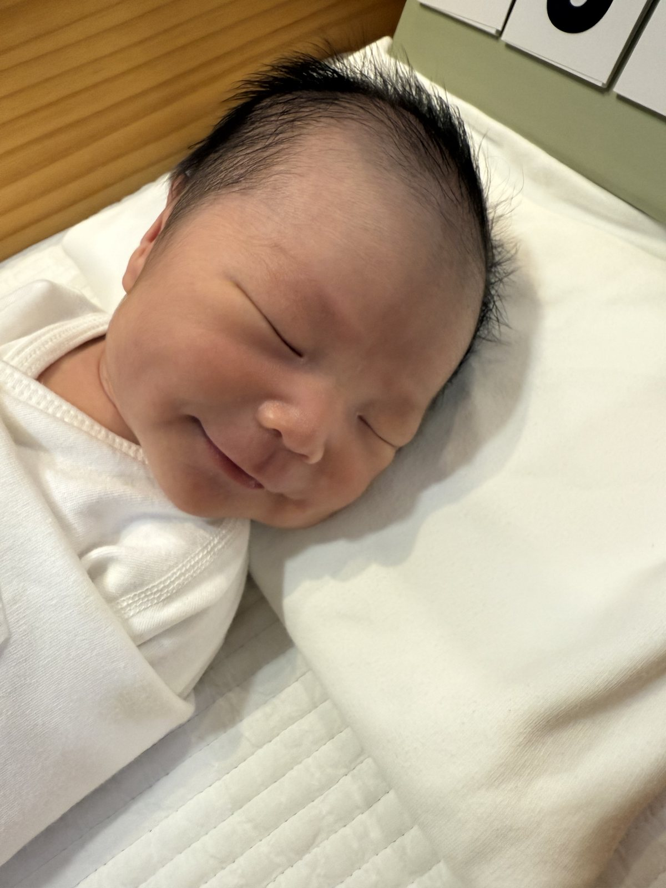
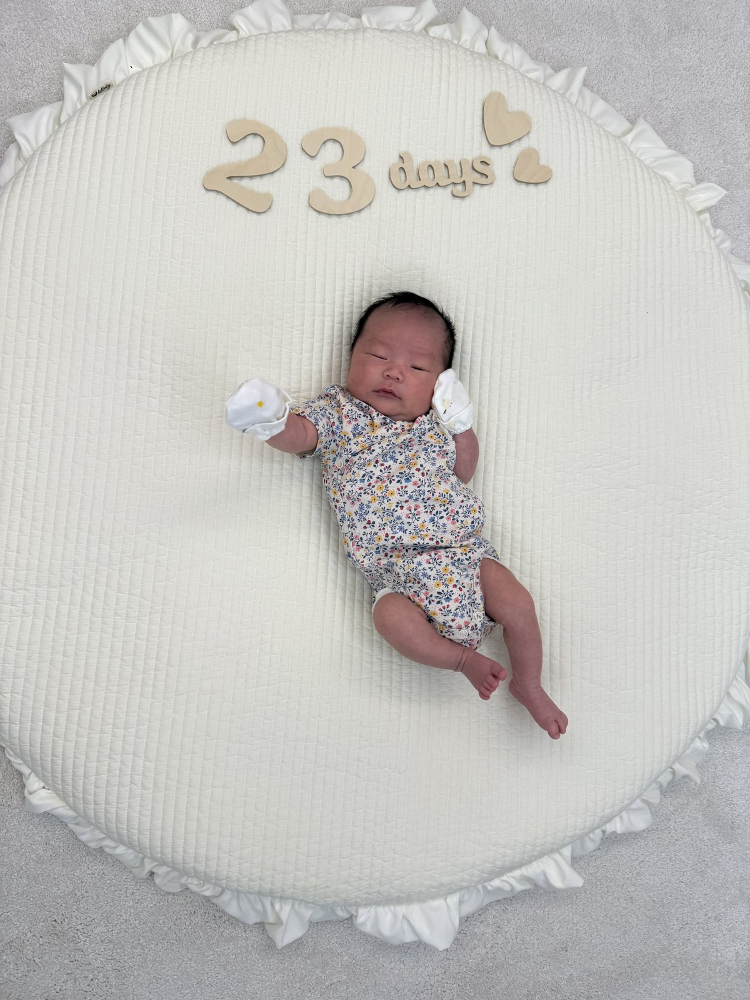
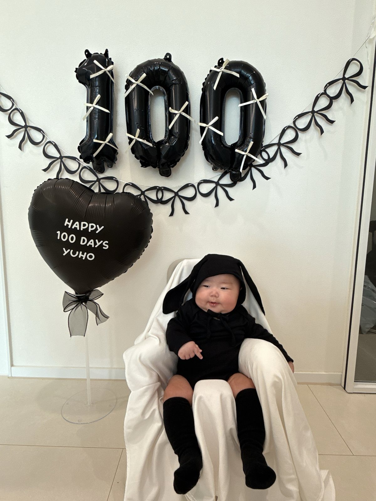
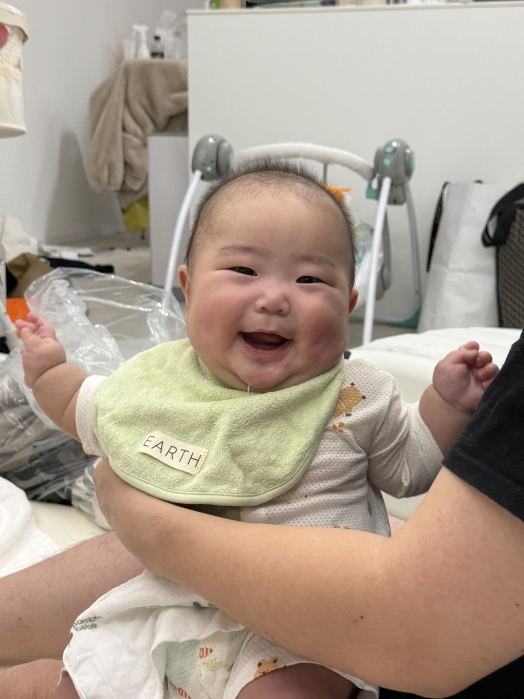
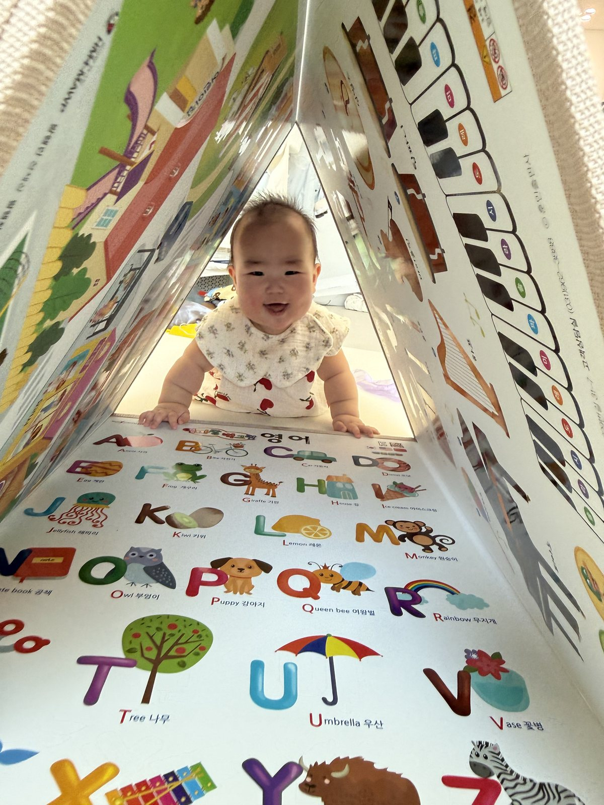

0 Month
잠든 얼굴에도 미소가 머물던, 처음 만난 그날.
유호 · First Birthday
First Birthday
one beautiful year
2026. 08. 17 · Monday · 11:30
Story
처음 만난 숨결, 손끝에 머문 온기, 매일 조금씩 달라지던 표정. 유호와 함께한 일 년은 서툴지만 깊은 사랑을 배우는 시간이었습니다. 그 고요하고 환한 하루를, 가장 가까운 가족과 함께 기억하고 싶습니다.
Chapter 01
열두 개의 달, 수백 개의 순간. 한 장의 사진과 한 줄의 기억으로 유호의 첫 해를 천천히 펼칩니다.


잠든 얼굴에도 미소가 머물던, 처음 만난 그날.

백 번째 아침. 작은 토끼가 세상을 가만히 바라보던 날.

웃음이 소리가 되고, 하루가 더 환해지던 계절.

책 사이로 얼굴을 내밀며, 세상을 탐험하기 시작한 때.
한 살이 된 유호. 오늘의 주인공이 되어 웃고 있습니다.
Gallery
사진을 눌러 유호의 첫 해를 넘겨 보세요.
Invitation
Location
더우미제 스튜디오
경기도 용인시 기흥구 사은로 175 (지곡동)버스정류장 직전에 입구가 위치하고 있습니다.
스튜디오 인근에 주차 공간이 마련되어 있습니다. 주말에는 자리가 금방 찰 수 있으니, 조금 여유 있게 와 주시면 좋습니다.
11시 30분 전에 도착하시면 입장이 어려울 수 있으니, 인근 스타벅스 한국민속촌점 또는 달애울 카페를 이용해 주시면 감사하겠습니다.
행사장으로 화환은 받지 않습니다.
Contact
궁금한 점이 있으시면 편하게 연락 주세요.
Father
Mother
Thank You
유호의 첫 생일을 함께해 주셔서 고맙습니다.